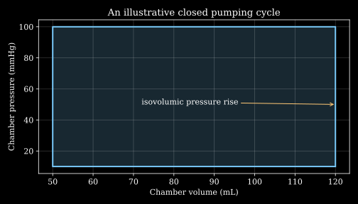

3. The heart as a cyclic pump
Two ventricles can show the same decrease in chamber volume while sending different amounts of blood forward. A pressure trace can remain high in an artery while the ventricle that filled it has already relaxed. To understand either observation, we need the chambers, valves and vessels as a connected mechanical system.
Our running example is a left ventricle connected to an atrial reservoir through a mitral valve and to an arterial reservoir through an aortic valve. We begin with ideal one-way valves, then ask what changes when a valve leaks or the downstream load increases. The purpose is to connect anatomy to conservation, pressure differences and work, rather than infer function from one isolated number.
The anatomy separates receiving, pumping and directing flow L5 · 00:46 L7 · 00:35
The cardiovascular system transports blood so that exchange at tissue microvessels can supply nutrients and remove metabolic products. The heart generates mechanical pressure work; the vessels distribute and store blood; the blood transports matter and energy. The heart's own myocardium also requires a coronary blood supply. Pumping blood through a cavity is not the same process as delivering oxygen to all the cells in its wall.
An atrium is a receiving chamber; a ventricle is a discharge chamber with a substantial muscular wall. The right atrium receives systemic venous return, the right ventricle ejects toward the lungs, the left atrium receives pulmonary venous return, and the left ventricle ejects into the aorta. The septa separate the right and left sides in the ordinary anatomy considered here. Arteries carry blood away from the heart, veins toward it; pulmonary vessels show why those names do not mean oxygen-rich and oxygen-poor.
Three wall terms deserve distinct definitions. The endocardium lines the chambers; its surface includes endothelium continuous with vascular endothelium. The myocardium is the contracting cardiac-muscle layer. The epicardium is the outer heart surface, associated with the visceral layer of serous pericardium. The enclosing pericardial sac and its lubricated interface reduce friction during motion. A thin fluid-filled interface can reduce tangential friction while still transmitting normal pressure; lubrication does not imply that the heart has no external mechanical constraints.
Myocardial architecture links contraction to chamber shape change. The lecture's wrung-towel analogy suggests how orientation and twisting can accompany pumping. It is an analogy, not a proof that a particular fibre arrangement maximizes force. Real tissue has distributed cellular and connective structure, with directions varying through the wall. The Holzapfel–Ogden passive-myocardium study treats such directional organization explicitly; our later tissue chapter distinguishes it from a single isotropic muscle lump.
The NHLBI anatomy overview confirms the basic chamber and muscular-wall organization. Here those names become a mechanical partition: each chamber has a stored blood volume, each connection carries a flow, and the muscle changes pressure and geometry over time.
Two side-by-side pumps belong to one series circulation L5 · 10:43 L7 · 13:08
The route in the ideal closed circulation is systemic veins → right atrium → right ventricle → pulmonary arteries → lung vessels → pulmonary veins → left atrium → left ventricle → systemic arteries → tissue vessels → systemic veins. The two sides are anatomically adjacent but their outputs feed successive parts of this route. They are not independent pumps whose flow rates should simply be added as if they supplied two unrelated destinations.
Let $V_p$ be the blood volume stored between the right-ventricular outlet and left-ventricular outlet in an ideal pulmonary-side compartment, including the pulmonary vessels and intervening left-heart chambers. Its volume balance is
\[\frac{dV_p}{dt}=Q_R-Q_L.\]Here $Q_R$ and $Q_L$ are appropriately averaged inlet and outlet flows, in volume per time. If storage is periodic or statistically steady over a sufficiently long interval, its mean change vanishes, giving $\overline Q_R=\overline Q_L$. Instantaneous equality is unnecessary because compliant chambers and vessels store blood during a beat. This simple equality presumes the specified closed circuit without additional shunts or sources; detailed anatomical connections can require a more detailed compartment map.
A mean mismatch of $0.2\,\mathrm{L/min}$ sustained for 30 seconds adds $0.2(30/60)=0.1\,\mathrm L$, or 100 mL, to that compartment. A supposedly steady simulation with persistently unequal mean pump flows is therefore accumulating blood somewhere, even if each local waveform looks plausible.
The same mean flow can accompany different pressure rises. In a lumped resistance description, $\Delta p_s=Q R_s$ for the systemic circuit and $\Delta p_p=Q R_p$ for the pulmonary circuit. If their pressure drops are stipulated as 90 and 15 mmHg at the same $Q$, their effective resistance ratio is six. The lower pulmonary pressure requirement is associated with its lower resistance and other vascular properties. The statement that lungs are closer is not a sufficient hydraulic explanation: pressure loss depends on vessel geometry, viscosity, network organization and flow, as the tube model already showed.
A valve responds to the pressure difference across it L5 · 13:22 L7 · 16:46
The right atrioventricular valve is the tricuspid valve; the left is the mitral, typically two-leaflet valve. Chordae tendineae connect their leaflets to papillary muscles and help prevent leaflet prolapse when ventricular pressure rises. They do not operate as ropes that actively pull the valve open. The pulmonary and aortic valves are semilunar outlet valves, typically with three cusps, and have a different supporting arrangement. NHLBI's blood-flow account identifies the four chamber-to-vessel connections and their directional roles.
For a minimal left-heart model, define atrial pressure $p_a$, ventricular pressure $p_v$ and aortic pressure $p_o$, all measured relative to the same pressure reference. Let $Q_m$ be mitral flow into the ventricle and $Q_o$ aortic flow out of it. For positive valve resistances $R_m,R_o$, ideal one-way relations are
\[Q_m=\frac{(p_a-p_v)_+}{R_m},\qquad Q_o=\frac{(p_v-p_o)_+}{R_o},\qquad (z)_+=\max(z,0).\]A resistance has units pressure divided by volume flow. If pressures are in mmHg and flow in mL/s, resistance is in $\mathrm{mmHg\,s/mL}$. These idealized relations neglect leaflet inertia, flow inertia, opening dynamics and small transient reverse flows. Their usefulness is logical: a pressure must be compared with the pressure on the other side of the relevant valve.
With $(p_a,p_v,p_o)=(10,5,80)$ mmHg, the mitral valve admits flow and the aortic valve is closed. With $(10,50,80)$, both are closed. With $(10,100,80)$, the aortic valve admits forward flow and the mitral valve is closed. No one fixed ventricular pressure is an intrinsic switching threshold: changing atrial or aortic pressure changes the comparisons.
For incompressible chamber blood, volume conservation gives $\dot V=Q_m-Q_o$. When both ideal valves are closed, $\dot V=0$ even while active wall contraction changes pressure. Material incompressibility of the wall, discussed in chapter 2, is a separate condition from constant cavity volume during this phase.
Stenosis and regurgitation change different parts of this model. Stenosis restricts the available forward opening and can increase the pressure loss needed for a given flow. Regurgitation permits appreciable reverse flow when the valve should exclude it. Ranking every left-sided lesion as more serious than every right-sided lesion does not follow from anatomy alone: both circuits participate in a coupled circulation. This model provides no individual indication for valve replacement.
Read the cardiac cycle as a sequence of pressure inequalities L5 · 16:38 L7 · 22:20
Systole denotes the contraction phase and diastole the relaxation/filling phase, with the chamber specified. Atrial systole occurs during late ventricular diastole. Ventricular systole includes isovolumic contraction as well as ejection. Electrical activation coordinates the sequence; a prescribed mechanical activation schedule is an assumption, not an explanation of how the conduction system generates it. The NHLBI account of the heartbeat describes that coordinating electrical role.
| Ventricular phase | Ideal valve state | Volume behavior | Mechanical reason |
|---|---|---|---|
| Filling, including late atrial contribution | Mitral open, aortic closed | Volume increases | Atrial pressure exceeds ventricular pressure |
| Isovolumic contraction | Both closed | Volume fixed at EDV | Ventricular pressure exceeds atrial pressure but has not opened the outlet |
| Ejection | Aortic open, mitral closed | Volume decreases | Ventricular pressure drives outward flow against the arterial load |
| Isovolumic relaxation | Both closed | Volume fixed at ESV | Outlet has closed; ventricular pressure remains above atrial pressure until filling begins |
End-diastolic volume, EDV, is the chamber volume at the end of filling; end-systolic volume, ESV, is the volume remaining at the end of ejection. EDV is a state reached in the particular beat, not a fixed maximum anatomical capacity. The heart does not begin to contract merely because an incompressible container has become completely full. Active electrical–mechanical coordination changes wall force generation, and the pressure inequalities then govern valve behavior.
When ejection begins, ventricular pressure can continue rising while volume is already falling. Later, active force decreases and the pressure relation reverses sufficiently for outlet closure. A statement that all ventricular pressure decrease is simply caused by blood leaving misses the muscle's activation and relaxation. With both valves subsequently closed, pressure can fall substantially at fixed ESV.
A Wiggers diagram aligns pressure, volume, electrical activity and other signals against time. A pressure–volume loop instead plots pressure against chamber volume; it sacrifices explicit time on the axes but displays a work integral. Neither is a direct graph of material myocardial strain.
The lecture's illustrative timing is a period of 0.8 s at 75 beats/min, with roughly 0.3 s ventricular systole and 0.5 s diastole. These are an example schedule, not universal constants for every rate or condition. Similarly, a stated passive-filling fraction is not a universal fixed fraction. Faster pacing can shorten available filling time, and the resulting volume need not remain unchanged.
Arterial pressure is not ventricular diastolic pressure L5 · 25:21 L7 · 36:19
The inspected source slide explicitly labels its 120/80 mmHg example systemic aorta and its 24/8 example pulmonary artery. They are arterial waveform values, not a claim that the left ventricle remains at 80 mmHg in diastole or the right ventricle remains at 8 mmHg. If atrial pressure were only a few mmHg while ventricular pressure stayed at 80, an ordinary inlet valve could not admit filling through the pressure relation just derived. The source's separate ventricular and arterial curves show their divergence after outlet closure.
A compliant arterial reservoir explains how arterial pressure can persist between ejections. Let its stored volume be $V_o$ and compliance $C_o=dV_o/dp_o\gt0$, in volume per pressure. Let a downstream resistance $R$ drain it toward constant reference pressure $p_b$. With constant compliance and a linear outflow law, conservation gives
\[C_o\frac{dp_o}{dt}=Q_o-\frac{p_o-p_b}{R}.\]During a closed-outlet interval, $Q_o=0$, and separation of variables gives $p_o(t)-p_b=[p_o(0)-p_b]\exp[-t/(RC_o)]$. The product $RC_o$ has time units. Blood can continue flowing downstream as the reservoir releases stored volume even while its upstream ventricular valve is closed.
For the original inputs $R=1\,\mathrm{mmHg\,s/mL}$, $C_o=1.5\,\mathrm{mL/mmHg}$, $p_b=5$ mmHg and $p_o(0)=100$ mmHg, pressure after 0.5 s is 73.0705 mmHg. These values illustrate reservoir mechanics; they do not reconstruct the lecturer's waveform or establish a person's pressure range. Wave propagation, variable compliance, distributed resistance and detailed valve dynamics are omitted.
Pressure reference also matters. A transmural pressure is internal minus surrounding pressure. A change in thoracic or pericardial pressure can affect filling without being equivalent to a change in all pressure differences throughout the circulation. The qualitative respiratory-pump discussion in the review therefore should not be converted into a rule that a deep breath always raises all venous pressures or improves an individual's cardiac output.
Stroke volume and ejection fraction describe different quantities L5 · 27:13 L7 · 35:53
For an ordinary ejection with no appreciable simultaneous inflow or regurgitation, stroke volume is $SV=EDV-ESV$. Ejection fraction is $EF=SV/EDV$ for $EDV\gt0$. At a regular heart rate $H$ in beats/min and repeatable stroke volume in mL/beat, mean output per pump is $CO=H\,SV/1000$ in L/min. In an irregular sequence, the relevant quantity is total net forward volume divided by elapsed time; multiplying unrelated average rates and volumes can lose their dependence.
With EDV 120 mL and ESV 50 mL, stroke volume is 70 mL and ejection fraction $70/120=0.583333$. At the lecture's 75 beats/min, output is 5.25 L/min. This differs from chapter 1's separate 70-beat/min illustration because the input rate differs. The 5.25 L/min passes through successive pulmonary and systemic circuits; it is not ordinarily reported as 10.5 L/min by adding both ventricles.
Now retain the same ventricular volume decrease but permit 20 mL to leak back through the mitral valve during contraction. If the remaining 50 mL reaches the aorta and there is no aortic reverse flow, forward systemic output at 75 beats/min is 3.75 L/min. The geometrically computed ejection fraction is still $70/120$. The chamber has displaced 70 mL, but the destination of that displacement has changed. Ejection fraction alone does not identify net forward delivery or an intrinsic muscle property.
Regurgitation can also destroy exact isovolumic stages: if a nominally closed valve passes blood, $Q_m-Q_o$ may be nonzero. In a signed-flow convention, one could replace the ideal aortic relation by $Q_o=G_+(p_v-p_o)_+-G_-(p_o-p_v)_+$, with nonnegative forward and reverse conductances. Setting $G_-=0$ recovers the ideal diode. Which extension is appropriate requires actual valve evidence; an algebraic leak coefficient is not a diagnostic measurement.
The pressure–volume loop measures boundary work L5 · 25:10
For uniform chamber pressure and an effectively constant surrounding-pressure reference, work delivered by the chamber over a closed cycle is $W_{\rm cycle}=-\oint p_v\,dV$. Pressure acts on the moving chamber boundary; the minus sign makes high-pressure volume decrease a positive contribution to delivered work. Subtracting a constant external pressure does not change the closed-loop integral because $\oint dV=0$. If surrounding pressure varies during the cycle, that contribution must be treated explicitly.
Consider the original rectangular loop with vertices $(V,p)=(120,10),(120,100),(50,100),(50,10)$, in mL and mmHg, then returning to the start. The two vertical segments have $dV=0$. Ejection contributes $100(120-50)=7000\,\mathrm{mmHg\,mL}$ of delivered work, while filling at 10 mmHg subtracts $10(120-50)=700\,\mathrm{mmHg\,mL}$. The net is 6300 in those units.

Using $1\,\mathrm{mmHg}=133.322387415\,\mathrm{Pa}$ and $1\,\mathrm{mL}=10^{-6}\,\mathrm{m^3}$ gives $W=0.839931$ J. At 75 cycles/min, mean boundary power is $W(75/60)=1.049914$ W. These many printed digits reproduce the numerical model; they are not measurement precision. Multiplying systolic pressure alone by stroke volume would include ejection work but omit the low-pressure return path.
Zero pressure–volume boundary work during an ideal isovolumic phase does not mean zero biochemical energy use. Active tissue can generate force, redistribute internal strain, dissipate energy and consume ATP while total cavity volume is fixed. Pressure–volume area, local material stress–strain work and whole-organ metabolic expenditure are distinct objects. Converting one into another requires an additional model and measurements.
Loading and contractile response interact L5 · 28:35 L7 · 37:25
Preload refers to mechanical loading/stretch before contraction; EDV can be a useful chamber-level proxy, but it is not identical to local fibre stress. Afterload is the opposition encountered during ejection, involving pressure and the vascular/valvular load. Contractile state concerns the active force-generating response under specified conditions. These cannot all be inferred from one observed EF.
In a primary experiment, Suga (1971) examined a time-varying ventricular pressure/volume ratio in dogs under control conditions and positive inotropic stimulation. The paper reports changes in peak magnitude and timing and discusses loading qualifications. Its methods used measured pressure and a volume reconstruction, so the result is an experimentally bounded organ-level relation. It does not make every pressure/volume ratio a load-independent universal material modulus.
The following original end-systolic construction makes the dependence transparent. Assume a linear chamber relation $p_{es}=E_{es}(V_{es}-V_0)$ and an effective load relation $p_{es}=E_a SV$, with pressures sharing a zero reference. Here $E_{es},E_a\gt0$ have units pressure/volume, $V_0$ is an intercept volume, and $SV=V_{ed}-V_{es}$. This is an endpoint model, not the complete experimental model of that paper and not a time-resolved flow solution.
Equating the two pressures and collecting $V_{es}$ gives
\[V_{es}=\frac{E_aV_{ed}+E_{es}V_0}{E_{es}+E_a},\qquad SV=\frac{E_{es}}{E_{es}+E_a}(V_{ed}-V_0).\]At fixed $E_{es}$ and EDV above $V_0$, increasing $E_a$ lowers stroke volume and raises ESV in this construction. With $V_{ed}=120$ mL, $V_0=10$ mL, $E_{es}=2\,\mathrm{mmHg/mL}$ and $E_a=1.5\,\mathrm{mmHg/mL}$, it gives $SV=62.8571$ mL and $ESV=57.1429$ mL. Doubling $E_a$ gives $SV=44$ mL and $ESV=76$ mL with unchanged $E_{es}$. A changed ejection fraction can therefore result from changed loading without a changed active-state parameter.
The limits are instructive: as $E_a$ becomes arbitrarily large with other inputs fixed, predicted stroke volume tends to zero. For a fixed load, increasing the chamber parameter increases this predicted stroke volume. Neither statement includes reflex regulation, altered filling, remodeling or a changing activation history. Chamber elastance in mmHg/mL also has different dimensions from a material elastic modulus in Pa; geometry connects organ and tissue behavior.
Execute conservation, work and load checks
The standalone standard-library program evaluates the explicit examples. It uses a separate reservoir model for arterial pressure and a separate endpoint model for loading; those pieces are not claimed to form one calibrated simulation. Assertions compare loop work with its independently derived rectangular area and compare the two expressions for end-systolic pressure.
"""Original lumped heart-cycle checks; illustrative inputs, not a patient model."""
from math import exp, isclose
edv, esv, rate = 120., 50., 75. # mL, mL, beats/min
sv = edv - esv
print(f"Stroke volume: {sv:.3f} mL; EF: {sv/edv:.6f}")
print(f"Output per pump: {rate*sv/1000:.3f} L/min")
mmhg_ml_to_j = 133.322387415e-6
volumes, pressures = [120.,120.,50.,50.], [10.,100.,100.,10.]
work = -sum((pressures[i]+pressures[(i+1)%4])/2 *
(volumes[(i+1)%4]-volumes[i]) for i in range(4)) * mmhg_ml_to_j
assert isclose(work, (100-10)*70*mmhg_ml_to_j)
print(f"Loop work: {work:.6f} J; mean boundary power: {work*rate/60:.6f} W")
r, compliance, venous, initial, time = 1., 1.5, 5., 100., .5
arterial = venous+(initial-venous)*exp(-time/(r*compliance))
print(f"Diastolic arterial reservoir pressure: {arterial:.6f} mmHg")
for arterial_elastance in [1.5,3.]:
ventricular_elastance, v0 = 2., 10.
stroke = ventricular_elastance/(ventricular_elastance+arterial_elastance)*(edv-v0)
end_volume = edv-stroke
pressure = arterial_elastance*stroke
assert isclose(pressure, ventricular_elastance*(end_volume-v0))
print(f"Ea {arterial_elastance:.1f}: SV {stroke:.6f} mL, ESV {end_volume:.6f} mL")
regurgitant = 20.
print(f"Same chamber stroke with mitral backflow: forward output {rate*(sv-regurgitant)/1000:.3f} L/min")
print(f"Pulmonary accumulation for 0.2 L/min mismatch over 30 s: {.2*30/60*1000:.1f} mL")
print("Conservation, loop-sign and end-systolic intersection checks passed")
Stroke volume: 70.000 mL; EF: 0.583333 Output per pump: 5.250 L/min Loop work: 0.839931 J; mean boundary power: 1.049914 W Diastolic arterial reservoir pressure: 73.070475 mmHg Ea 1.5: SV 62.857143 mL, ESV 57.142857 mL Ea 3.0: SV 44.000000 mL, ESV 76.000000 mL Same chamber stroke with mitral backflow: forward output 3.750 L/min Pulmonary accumulation for 0.2 L/min mismatch over 30 s: 100.0 mL Conservation, loop-sign and end-systolic intersection checks passed
Problems and fully worked solutions
1. Which valves are open? With $p_a=10$ and $p_o=80$ mmHg, classify the ideal valve state when ventricular pressure is 5,50 and100 mmHg. Which case is compatible with isovolumic contraction?
Solution
At5, $p_a-p_v=5\gt0$ and $p_v-p_o=-75\lt0$, so the mitral valve passes inward flow and the aortic valve does not. At50, both driving differences are negative, so both ideal flows vanish. At100, the aortic difference is20 and the mitral difference-90, giving outward flow only. The middle state is compatible with isovolumic contraction if pressure is rising, or relaxation if falling: pressure values and valve states alone do not specify the direction of the activation history.
2. Mean pump mismatch. A simulation reports mean right and left flows of5.2 and5.0 L/min for30 seconds. Assuming the otherwise closed pulmonary-side compartment bounded by the two ventricular outlets, find its volume change. Can the result be called a steady volume balance?
Solution
The inflow exceeds outflow by0.2 L/min. Multiplying by0.5 min gives0.1 L=100 mL accumulated. A steady average compartment would require zero mean accumulation. The mismatch might be a transient, finite averaging error or inconsistent model, but it is not a steady closed-compartment balance under the stated numbers.
3. Same ejection fraction, different destination. EDV is120 mL andESV50 mL at75 beats/min. Compare net aortic output with no backflow and with20 mL per beat returning through a leaky mitral valve during ejection. Assume no other abnormal flow.
Solution
The chamber decreases by70 mL and EF is70/120=0.583333 in both cases. Without leakage all70 reaches the aorta, giving5.25 L/min. With mitral backflow only50 reaches the aorta, giving3.75 L/min. The unchanged volume-derived fraction does not identify net forward delivery. In a full periodic system, the returned20 mL must also enter the atrial balance; it cannot disappear from conservation.
4. Work and the isovolumic phases. Compute the work of the rectangular loop with pressures10 and100 mmHg and volumes50 and120 mL. Why does zero external work on a vertical segment not prove zero myocardial ATP consumption?
Solution
The delivered cycle work is pressure difference times stroke width,90×70=6300 mmHg mL. Multiplying by133.322387415×10^-6 gives0.839931 J. On a vertical segment $dV=0$, so this particular boundary-work contribution vanishes. That integral does not measure all local material deformation, internal dissipation or active biochemical processes. A whole chamber can keep its volume while tissue develops force and consumes chemical energy.
5. A reservoir keeps pressure after outlet closure. In the stated arterial example, find the time to halve $p_o-p_b$. Why is halving the pressure difference different from halving the absolute gauge pressure?
Solution
The excess pressure decays with time constant $RC_o=1.5$ s. Half its initial value requires $t=1.5\log2=1.03972$ s. Starting at100 mmHg with downstream pressure5, the excess95 falls to47.5, so pressure becomes52.5 mmHg, not50. The balance drains toward5, not toward zero. Consistent pressure references and downstream conditions are part of the model.
6. Loading changes the endpoint. In the end-systolic model, hold EDV120 mL,$V_0=10$ mL and$E_{es}=2$ mmHg/mL. Find stroke volume andEF for$E_a=1.5$ and3 mmHg/mL. Does the change prove reduced$E_{es}$?
Solution
The model gives$SV=2(110)/(2+1.5)=62.8571$ mL andEF0.523810 in the first state. In the second,$SV=2(110)/5=44$ mL andEF0.366667. The active-state parameter$E_{es}$ was held fixed by construction; the difference follows entirely from the changed effective load. An observedEF change alone cannot identify which model inputs changed in an actual heart.
7. Faster rate need not preserve filling. Assume systolic duration stays0.3 s. Compare available diastole at75 and120 beats/min. In a separate filling model $V(t)=V_\infty-(V_\infty-V_s)e^{-t/\tau}$, use$V_\infty=140$ mL,$V_s=50$ mL and$\tau=0.3$ s to estimate EDV in the two intervals.
Solution
The periods are60/75=0.8 s and60/120=0.5 s, so available filling times are0.5 and0.2 s under the imposed fixed-systole assumption. Substitution gives$EDV_1=140-90e^{-5/3}=123.001$ mL and$EDV_2=140-90e^{-2/3}=93.7925$ mL. HoldingESV50 for this separate example would give strokes73.001 and43.7925 mL, not one unchanged stroke multiplied by a faster rate. The assumed fixed systolic duration and fixedESV are illustrative restrictions, not universal physiological rules.
8. Material volume versus cavity volume. An incompressible wall surrounds a changing cavity. Explain why $J=1$ for every wall element does not force chamber volume to stay fixed. Then explain why closed ideal valves can nevertheless enforce an isovolumic phase.
Solution
The wall's local condition preserves volumes of wall material elements. They can deform and move so that the enclosed cavity grows or shrinks without changing the wall's material volume; a deforming shell is a direct geometric example. Cavity blood follows a separate control-volume balance. If that blood is incompressible and both ideal valves exclude all flow, $\dot V=Q_m-Q_o=0$. That is a boundary-flow condition on a different region, not a consequence of wall incompressibility alone.
What a pump model still needs
Pressure differences and conservation turn anatomical connections into a mechanical circuit. A valve law determines permitted flow directions; wall activation and a constitutive law determine how forces arise; compliant vessels store volume; a load relation sets the environment into which the chamber ejects. Isolated measurements of volume, pressure orEF leave parts of this coupled problem unidentified.
The examples are educational reductions with explicit interfaces and illustrative inputs. They omit spatial flow, detailed valve mechanics, distributed vascular waves, cellular activation kinetics and patient-specific calibration. They do not infer treatment, normality, contractility or metabolic demand from an isolated fraction or pressure pair. The next chapter develops the local myocardial mechanics needed to connect wall deformation with passive and active stress.
Sources and inspection scope
- Official lesson5, Heart Part1 and official lesson7, Review of Heart Part1: complete local machine transcripts read. Selected lesson5 frames870/1550s and lesson7 frame1430s inspected; no comprehensive audiovisual audit.
- NHLBI heart anatomy, blood flow through the heart and the heartbeat: directly inspected chamber/valve roles and electrical coordination. Their clinical advice is not imported into the illustrative calculations.
- Suga, Left Ventricular Time-varying Pressure/Volume Ratio in Systole as an Index of Myocardial Inotropism (1971), primary paper: summary, methods, results/discussion text and appendix inspected; figures/tables were not independently digitized. Supports the bounded historical experimental context, not the new numerical endpoint example.
- Holzapfel–Ogden, Constitutive modelling of passive myocardium (2009): morphology and directional passive-tissue framework inspected. Used to bound the towel analogy and motivate local wall mechanics; no complete cardiac fit or active model reproduced.